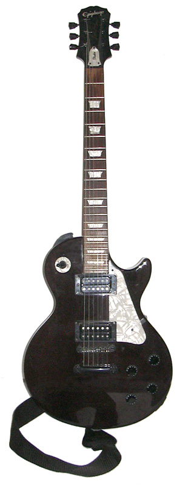

电吉他，是一种拨弦乐器。发声原理与传统吉他不同，不是以箱体的振动发声，而是运用了电磁学原理，它的琴身是实体的木头而非空的音箱。演奏时琴身中的导线中产生不同频率的电流，当这些电流通过电子音箱还原时，就成了电吉他的声音。因为它不是原声乐器而是以电流发声的，所以一些电子仪器被制造出来通过改变或添加电流等方法来改变电吉他的声音。这些仪器被称做效果器。电吉他为了追求美感或是需求性，而开发出各式各样的琴形。
